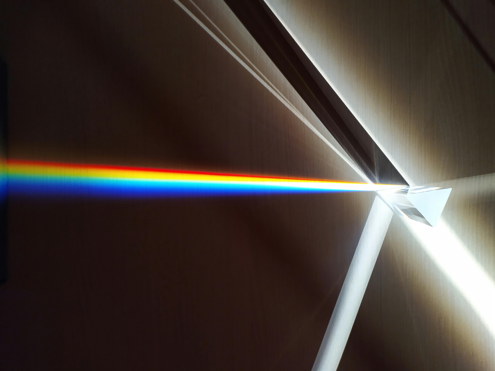

Click "See more" to expand and explore the core details of each physical field:
Fiber Optics and the Communication Revolution
Fiber optic technology relies fundamentally on the phenomenon of light refraction, specifically "Total Internal Reflection" (TIR). This occurs when light travels through a core material and hits the boundary of a cladding material with a lower refractive index at a specific angle. By precisely engineering these refractive indices, light is trapped inside the core, bending continuously to transmit massive amounts of data at the speed of light across global telecommunication networks with minimal signal loss.
Source Book:*Fundamentals of Photonics* by Bahaa E. A. Saleh and Malvin Carl Teich.
... See more
Fermat’s Principle and the Path of Least Time
In theoretical physics, light refraction is not viewed merely as a geometric bending of rays, but as a direct consequence of Fermat’s Principle of Least Time. The principle states that when light travels between two points through different media (such as air and glass), it chooses the path that minimizes the travel time rather than the spatial distance. The sudden change of direction at the interface is a mathematical optimization of time, serving as a foundational concept for understanding Hamilton's principle and the laws of classical and quantum mechanics.
Source Book:*Introduction to Electrodynamics* by David J. Griffiths.
... See more
Photonic Neural Networks and Intelligent Refraction Modeling
The intersection of Artificial Intelligence and physics has birthed two major innovations. First, Machine Learning models are widely used to predict and simulate how light refracts through chaotic, complex media like atmospheric turbulence or biological tissues. Second, researchers are developing "Photonic Computing" systems where optical neural networks use light refraction instead of electricity. By controlling laser refraction angles within microchips, AI processing speeds are accelerated exponentially, eliminating electronic latency.
Source Book:*Photonics for Artificial Intelligence* by Yueting Chen / *Artificial Intelligence in Physics* (AIP Publishing).
... See more
Biophotonics and Optical Corrections of Human Vision
Medical physics treats the human eye as a complex biological optical system governed by light refraction. The cornea and the crystalline lens act as natural convex lenses that refract incoming light rays to focus them sharply onto the retina. When refractive errors occur—such as myopia (nearsightedness) or hyperopia (farsightedness) due to improper eye curvature—medical physicists design corrective lenses or laser surgery profiles to adjust the refraction angle, restoring the focal point precisely to the retina.
Source Book:*Intermediate Physics for Medicine and Biology* by Russell K. Hobbie and Bradley J. Roth.
... See more
Scientific fields do not operate in isolation; they create a highly collaborative ecosystem:
A breakthrough begins in Theoretical Physics as an equation. Then, Applied Physics engineering turns it into a functional tool. Next, Artificial Intelligence optimizes its performance and parameters. Finally, it delivers life-saving value through Medical Physics applications.
Refraction of Light: It is the phenomenon where the direction of a light wave changes as it passes from one transparent medium to another with a different optical density (such as moving from air into water or glass).

To view an interactive, real-time physics simulation of light bending and changing media:
Launch Interactive Simulation